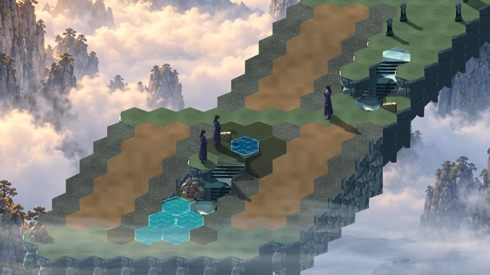
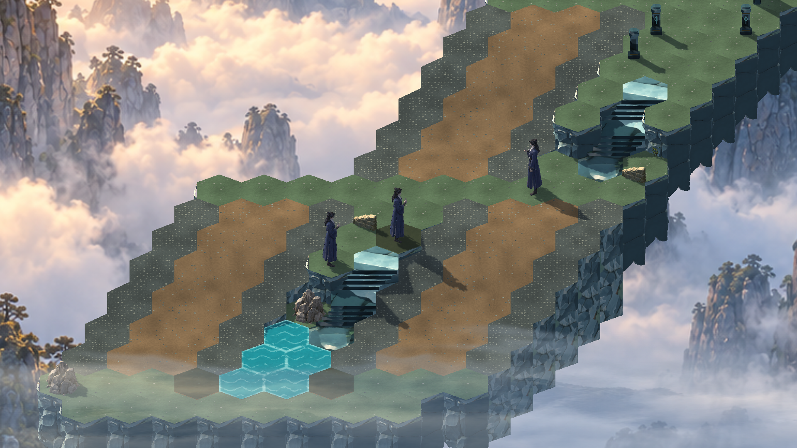
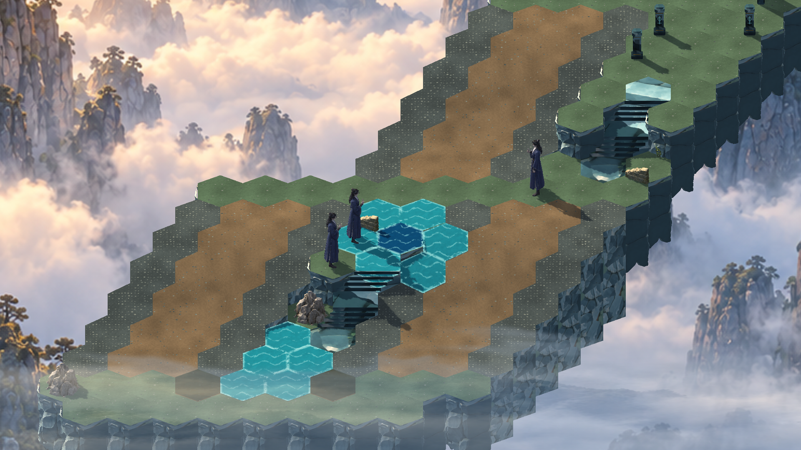

蓄澜 · 水与地表
Unity 资源样例 · 2026-11-17重做。正式阶地尺度、原水片与低植网格，六帧由现有战斗命令实际结算。尚未接入正式 Demo 与 V3 HUD。
原速连续片段：施放前 → 首次涨潮灭火 → 再次涨潮冲蚀低植 → 两次退潮 → 终止。初始橙色燃烧格沿用现有表现作参照，长明风格化火焰另见 D12.3 资源包。首涨受崖边阻挡，首退将水修向潮源推一格；动作与落点来自实际结算。
① 施放前：潮源浅水，低植所在格燃烧。
② 首涨中：卷浪向外涌出，原火格短暂蒸汽，低植保留。

③ 首涨后：火变湿，源变深；低植耐久仍为15。
 ④ 次涨后：周围湿地变浅水，低植冲蚀消退；已深的潮源不重复变化。
⑤ 首退后：周围变湿，源变浅；角色位于实际推移落点。
④ 次涨后：周围湿地变浅水，低植冲蚀消退；已深的潮源不重复变化。
⑤ 首退后：周围变湿，源变浅；角色位于实际推移落点。

⑥ 次退后：周围露干，潮源仍湿；低植不复生。
结束：当前归属地表清空，不恢复被改写的旧自然浅水。

默认 size=5 镜头：格位、岸线与角色可辨。主片全程 size=5 默认缩放；size=3 仅补图。